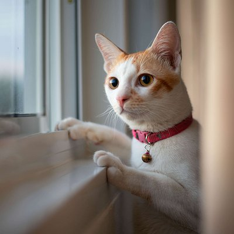
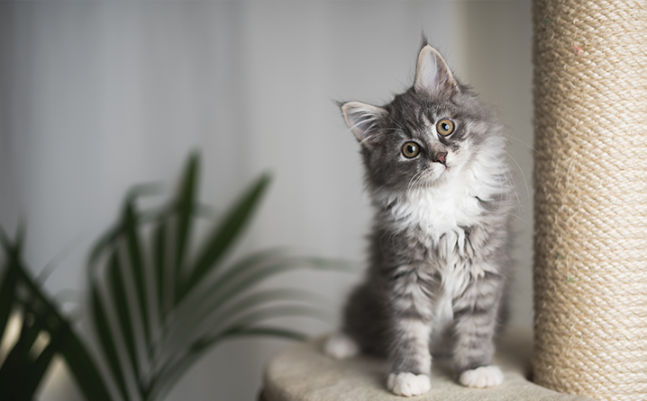
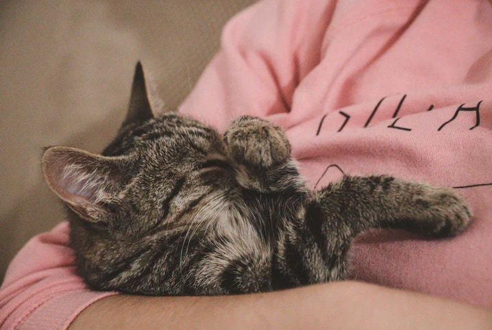

1. Acredita-se que o primeiro felino do mundo a dar origem a todas as espécies de gatos foi o Felis silvestris lybica. Ele era um gato selvagem, de porte grande e agressivo, com características proeminentes de predador.
Ouro Fino Pet: https://www.ourofinopet.com/blog/30-curiosidades-sobre-os-gatos/
2. O animal mais parecido com o gato é o tigre. Ele compartilha 95,6% de seu genoma com o gato. Além disso, o tigre é o maior felino do mundo.
Special Dog: https://www.specialdog.com.br/portalpet/manual-do-gato-
3. Os gatos têm uma expectativa de vida de 12 a 18 anos. Isso é equivalente a aproximadamente 100 anos de vida humana.
Petz: https://www.petz.com.br/blog/pets/gatos/